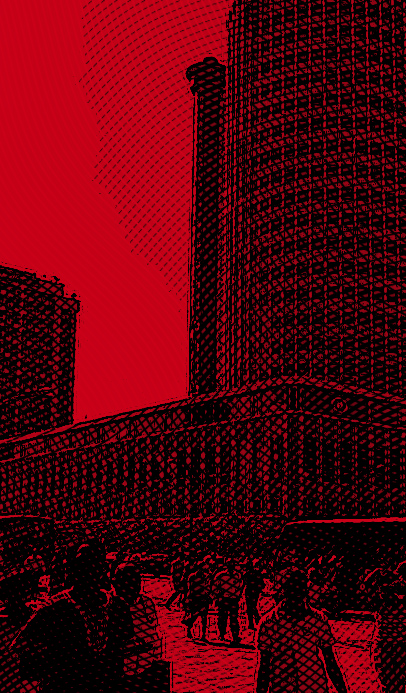
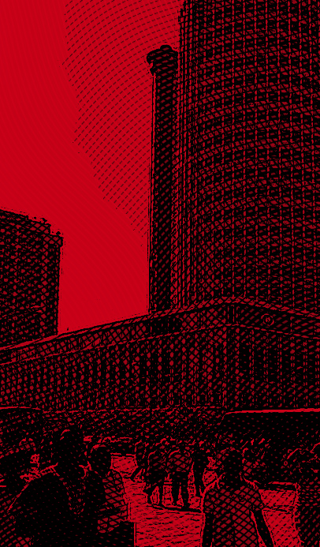

tokyo
Úrsula Corberó
For Tokyo, the free spirit who sacrificed herself for the people she loved.
She is a narrator in her writing. Although the professor has excellent force and bold ability to act as the second-in-command and action leader in the Mint following Berlin, such advantages will also serve as disadvantages due to personality defects.
She is a narrator in her writing. Although the professor has excellent force and bold ability to act as the second-in-command and action leader in the Mint following Berlin, such advantages will also serve as disadvantages due to personality defects.
the professor
Álvaro Morte
For the Professor, the mastermind who had never imagined that his gang would be the biggest treasure he’d find in a heist.
The leader and brain of the gang. He is the person who planned the robbery of the Spanish Mint. It plans to occupy the Mint for 12 days and print 2.4 billion euros in person, and both hostages and police appear to win public support by creating a principle that minimizes casualties.
The leader and brain of the gang. He is the person who planned the robbery of the Spanish Mint. It plans to occupy the Mint for 12 days and print 2.4 billion euros in person, and both hostages and police appear to win public support by creating a principle that minimizes casualties.
berlin
Pedro González Alonso
For Berlin, who saw each heist as a work of art.
The leader of the Mint penetration team He is a middle-aged man with a cold appearance, and is a professional criminal with numerous criminal records, including habitual bank and jeweler robberies even before the Mint robbery.
The leader of the Mint penetration team He is a middle-aged man with a cold appearance, and is a professional criminal with numerous criminal records, including habitual bank and jeweler robberies even before the Mint robbery.
denver
Jaime Lorente
For Denver, who found love and family in a heist, but also lost his father and Tokyo.
In charge of combat and hostage control. a son of Moscow After losing his organization’s drugs to a street drug dealer, he joined the professor’s team with his father in a situation where he had nothing more to lose. Thanks to his father, who was in and out of prison, he is a hot -tempered and ignorant man who grew up rough on the street and boasts rough talk and fighting skills.
In charge of combat and hostage control. a son of Moscow After losing his organization’s drugs to a street drug dealer, he joined the professor’s team with his father in a situation where he had nothing more to lose. Thanks to his father, who was in and out of prison, he is a hot -tempered and ignorant man who grew up rough on the street and boasts rough talk and fighting skills.
nairobi
Alba Flores
For Nairobi, who was the soul of the gang.
She is in charge of currency inspection. A former forger as a female member of the team with Tokyo. Alison, daughter of the British ambassador, who is a VIP hostage, is so kind that she points a gun at her mastermind when she is bullied by her classmates, praises her for being pretty, and advises her to live a more confident life.
She is in charge of currency inspection. A former forger as a female member of the team with Tokyo. Alison, daughter of the British ambassador, who is a VIP hostage, is so kind that she points a gun at her mastermind when she is bullied by her classmates, praises her for being pretty, and advises her to live a more confident life.
 nairobi

nairobi

helsinki
Darko Peric
For Helsinki, who lost Oslo and Nairobi, and taught us love requires more courage than war.
He is good with his hands in charge of combat and hostage control. Unlike his hideous appearance, he does not treat hostages recklessly, and he quietly comforts his teammates even when they are having a hard time.
He is good with his hands in charge of combat and hostage control. Unlike his hideous appearance, he does not treat hostages recklessly, and he quietly comforts his teammates even when they are having a hard time.
rio
Miguel Herrán
For Rio, who’s lost the love of his life.
He is in charge of computer and communication, and he is the youngest in the team. He is younger than other members and he is the only criminal, but his parents are ordinary, so when the police mention his parents, he shows a lot of shaking.
He is in charge of computer and communication, and he is the youngest in the team. He is younger than other members and he is the only criminal, but his parents are ordinary, so when the police mention his parents, he shows a lot of shaking.
Estocolmo
Esther Acebo
For Estocolmo, the fierce woman who left Monica Gaztambide behind to fight for the Resistance.
In season 1 and 2, she came out as a female employee of the Mint as a hostage, but she was guilty of preventing the hostages from escaping due to Stockholm syndrome, so from season 3, she will participate as a member of the team using the code name Estocolmo.
In season 1 and 2, she came out as a female employee of the Mint as a hostage, but she was guilty of preventing the hostages from escaping due to Stockholm syndrome, so from season 3, she will participate as a member of the team using the code name Estocolmo.
Lisboa
Itziar Ituño
For Lisboa, the flaw in the Professor’s plan who became his best ally.
In season 1, he led the negotiating team and was in charge of negotiations with the professor at the time of the Mint robbery. After learning the identity of the professor, he became a professor’s assistant from season 3 and led the team with a professor on the outskirts of Spain under the code name Lisboa.
In season 1, he led the negotiating team and was in charge of negotiations with the professor at the time of the Mint robbery. After learning the identity of the professor, he became a professor’s assistant from season 3 and led the team with a professor on the outskirts of Spain under the code name Lisboa.
Palermo
Rodrigo de la Serna
For Palermo, the engineer who’d given up on love and finally found it again in the most chaotic place.
He is an important figure who has been planning robberies with Berlin and professors for years, but he often feuds with his teammates and even attempts to leave the bank with a bag containing confidential documents. According to the professor, he is a self-superior maniac. It shows that he takes the lead to release his position, and he releases the hostage when he loses the initiative.
He is an important figure who has been planning robberies with Berlin and professors for years, but he often feuds with his teammates and even attempts to leave the bank with a bag containing confidential documents. According to the professor, he is a self-superior maniac. It shows that he takes the lead to release his position, and he releases the hostage when he loses the initiative.
Marsella
Luka Peroš
For Marseille, the most loyal friend and strongest soldier the Professor could have asked for.
He has appeared since season 3. It is in charge of broadcasting so that the professor’s position is not detected during the call between the professor and the government response team. He is believed to be a soldier and an animal lover.
He has appeared since season 3. It is in charge of broadcasting so that the professor’s position is not detected during the call between the professor and the government response team. He is believed to be a soldier and an animal lover.